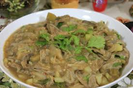

Eromba
Home

Description
Eromba is a beloved traditional chutney from Manipur, India, central to Meitei cuisine. Its defining ingredient is "ngari," a fermented fish, which is mashed together with boiled vegetables like potatoes and an assortment of local, seasonal produce. The dish is known for its bold flavors, often featuring the fiery "king chili," and is typically served alongside rice. Eromba offers a unique taste of Manipuri culinary heritage, showcasing the region's use of fermented foods and fresh, local ingredients.
Ingredients
- Ngari (Fermented Fish): This is the defining ingredient, providing a strong, umami flavor.
- Potatoes: Often used as a base, boiled and mashed to create a smooth texture.
- Chilies (Especially King Chili): These add significant heat, a hallmark of Manipuri cuisine.
- Tomatoes: These provide a bit of acidity and flavor.
- Onions and/or Garlic: Used for added flavor depth.
STEPS
- Clean and lightly roast the ngari.
- Wash and chop potatoes, tomatoes, and chilies.
- Boil the chopped vegetables until tender.
- Mash the roasted ngari into a paste.
- Mash the boiled potatoes and tomatoes.
- Combine the ngari paste with the mashed vegetables, adding optional onion/garlic.
- Season to taste and serve with rice.